Recuerda poner el volumen, una buena canción de Disney no puede fallar.

¿Qué te parece si utilizo personajes al estilo de Disney para esta carta? Daré por sentado que tu respuesta es un sí jeje.

Pero antes de nada, siempre agradecido por la ayuda de la IA y por la inspiración que saqué de un tipo en GitHub. Como leí en la bio de Steve Jobs, 'Los tontos copian, los genios roban'. ¡Creo que estoy en el camino de los genios, 🤫🤫!
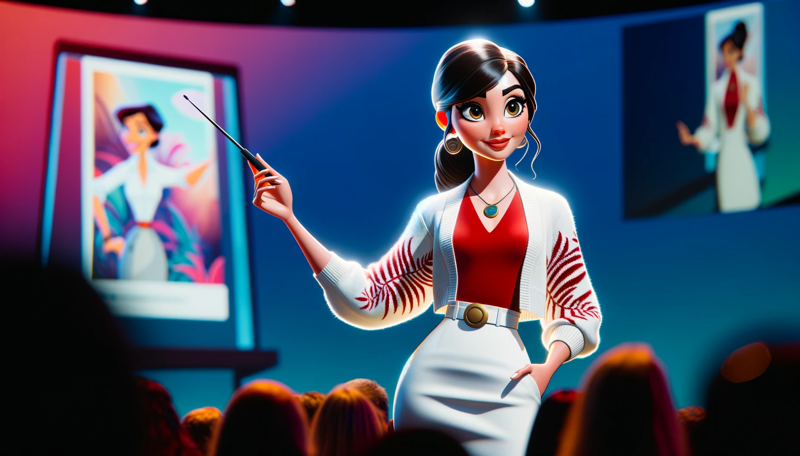Sinceramente, soy extremadamente tímido para este tipo de situaciones. Me siento como si me obligaran a presentar un proyecto ante una gran audiencia. Pero, como dicen, es mejor enfrentarse al miedo que vivir con el arrepentimiento.
Y hazme caso, si no viera algo en ti, no escribiría ni haría esto ni loco. Al fin y al cabo, nos vimos en persona 2 días, hemos hablado 4 veces contadas y estás a 8,000 km de mí, pero no lo sé, es como una corazonada que tengo.
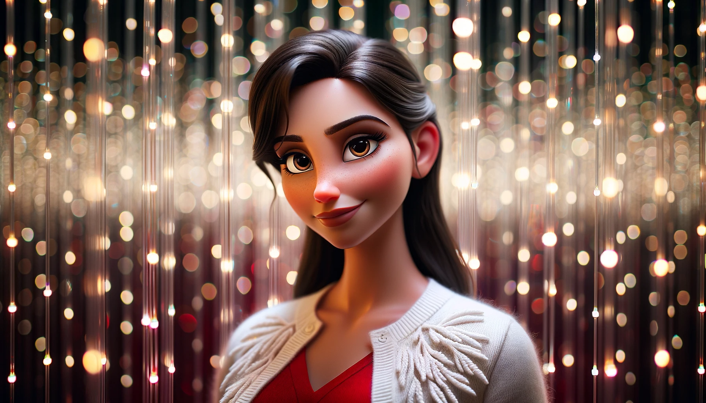Pero, Andrei, ¿qué es lo que ves en mí?
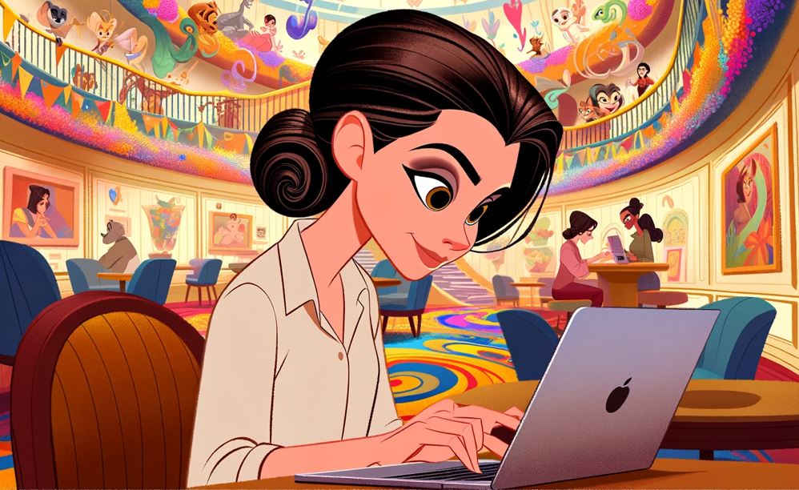Primero que nada, una mujer madura. Hay una frase tuya que no se me olvida: 'me siento mal por gastar dinero sin tener ingresos'. Esa manera de decirlo, nunca la había escuchado de nadie más. Eso dice mucho de ti, ¿sabes? No es solo el hecho de querer equilibrar ingresos y gastos, sino que también refleja una madurez impresionante y un sentido de responsabilidad que no se ve todos los días. Es fácil gastar sin pensar, pero tú... me enseñaste ese enfoque consciente y práctico.

Lo segundo, una mujer alegre, dulce y amable. Esto puede parecer una tontería, pero yo me fijo en esas pequeñas cosas. Me acuerdo que estábamos haciendo cola para una atracción y nos turnamos para ir a comer. Cuando volviste, no solo trajiste tu sonrisa contagiosa, sino también unos nuggets para mí. ¡Qué detallazo! No era solo un snack, era como decir 'hey, pensé en ti'. Ese gestito para mí fue como un abrazo en miniatura, recordándome lo genial que es fijarse en lo pequeño y lo mucho que mola.
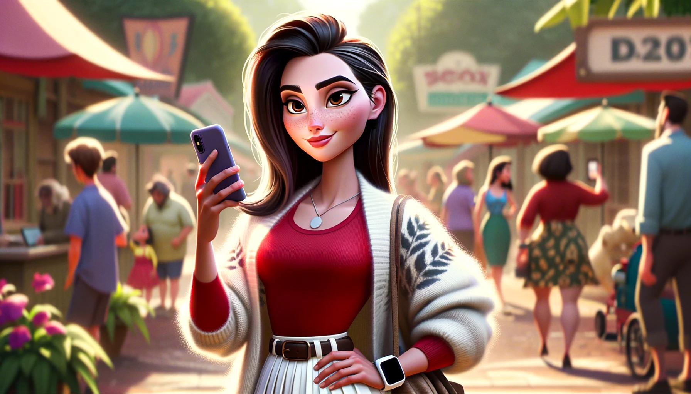Una mujer soñadora y ambiciosa. Me encantó cuando estuvimos charlando sobre proyectos y cosas que nos gustaría hacer. Y sabes, cuando me comentaste esa idea, no era solo la idea en sí, sino el hecho de soñar con hacer algo, de crecer.
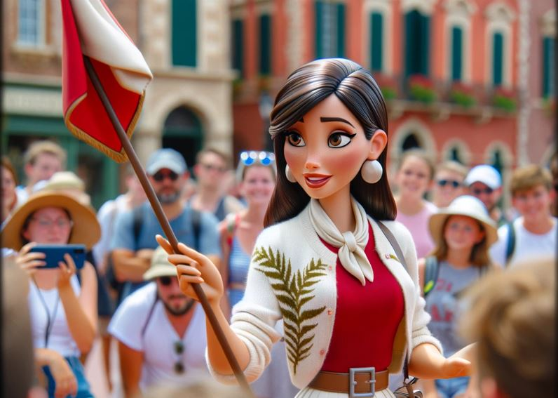En cuarto lugar, una guía turística. Tengo que acabar de ver todas las maravillas del mundo, y cuando llegue a Sudamérica necesitaré una guía. ¿Quién mejor que una chica trabajadora y alegre? Aunque no sé por dónde empezar, ¿por Chile o por Costa Rica? ¿Alguna recomendación?
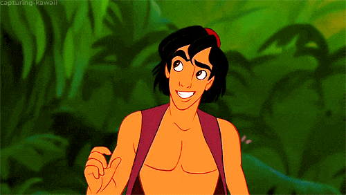Y sí, puede que suene como si te estuviera llenando de piropos, pero es que realmente es lo que vi en ti. No es exageración, es lo que siento.
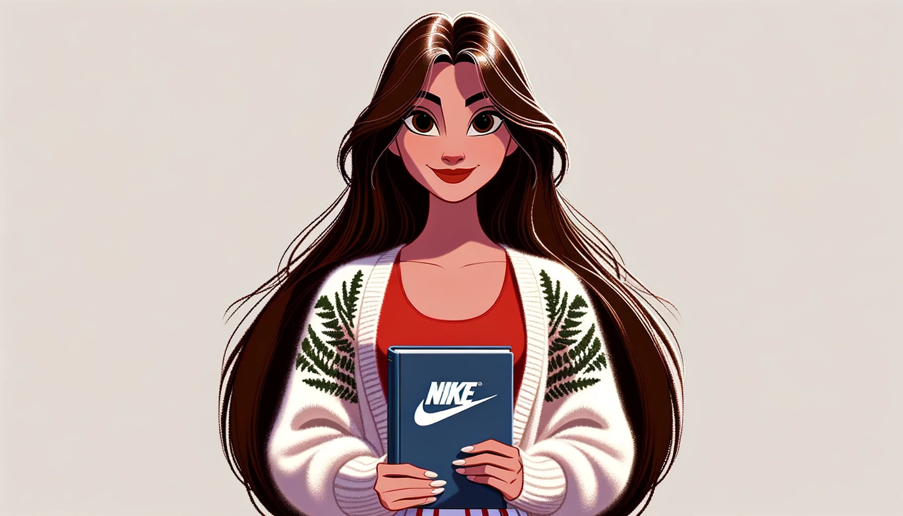Vale, esto es un poco aparte, pero tengo que decirlo: me explotó la cabeza, en serio, cuando te dije que mi libro favorito es 'Shoe Dog' de Phil Knight y resulta que ¡justo estabas leyéndolo! O sea, he recomendado ese libro a mis amigos, a compañeros de la uni, y nadie, pero nadie, se lo ha leído. De hecho, nunca nadie me había dicho 'me lo estoy leyendo'. ¡Qué locura, no?
No quiero sonar más loco de lo que ya soy, pero fue como si el universo estuviera mandando una señal.
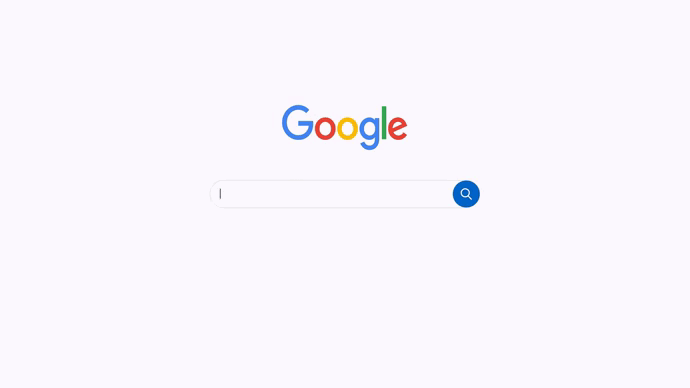Bueno si, todo eso está bien, ¿pero y tú, quién eres? Yo soy Andrei, al menos por ahora. Si algún día me meto en un lío de fraude fiscal y tengo que cambiar de nombre, ahí ya no me llamaré Andrei, ¡pero eso es otra historia!
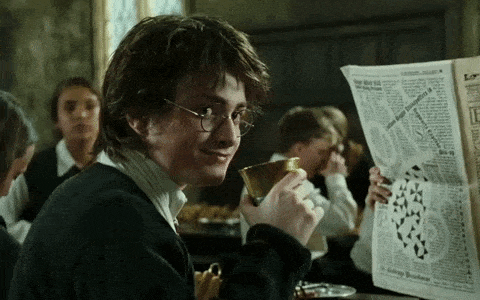Bueno, dejando las bromas a un lado, me considero un hombre espabilado, ni particularmente listo ni excepcionalmente inteligente; aún me queda mucho por aprender. Sin embargo, siempre trato de sacar el máximo provecho dentro de mis limitaciones. Ojalá supiera todo...
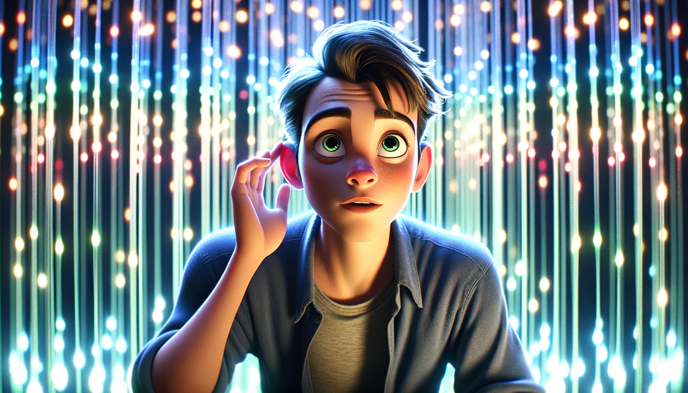Me encanta escuchar; tal vez sea una de mis mejores cualidades, por cierto, una cualidad infravalorada por la gente. Trato de hablar cuando es apropiado y no hablar por hablar.
⚠️ Alerta secreta ⚠️ esto no lo sabe nadie, pero me encanta cantar y bailar. Sin embargo, una cosa no quita la otra; se me da fatal. Además, no sé por qué, pero siempre que canto, empieza a llover y a tronar. Supongo que será por el cambio climático.

También me considero una persona detallista, humilde, cariñosa y ambiciosa. Ojalá algún día pueda crear algo que...
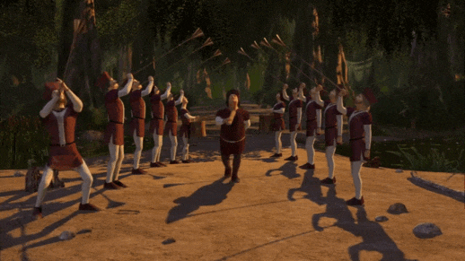Sí, mejor me callo y te dejo el video que he preparado: